Acreditare
Serviciul este confirmat prin certificat și poate fi verificat înainte de intrare.
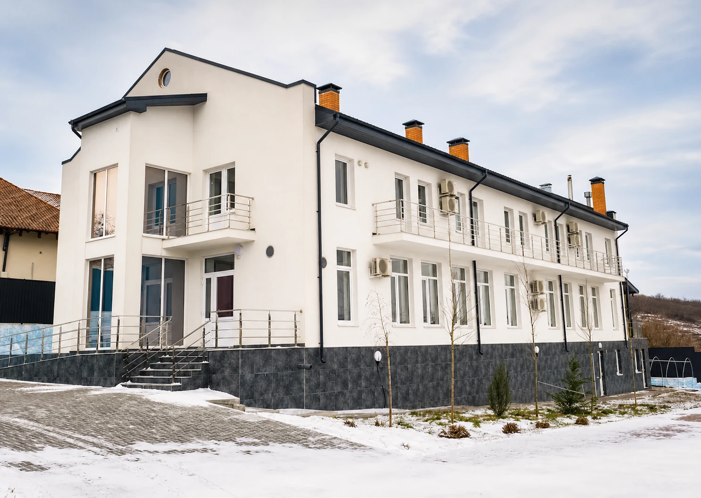
Program rezidențial de recuperare: cazare, masă, ritm zilnic, comunitate terapeutică și sprijin pentru familie.
Prima conversație nu vă obligă să intrați în centru. Ascultăm cu respect, explicăm pașii posibili și păstrăm confidențialitatea.
Arătăm ce există concret: acreditare, adresă, echipă, ritm zilnic și un prim dialog fără presiune.
Serviciul este confirmat prin certificat și poate fi verificat înainte de intrare.
Un format rezidențial cu ritm zilnic, sprijin și orientare pentru familie.
Spațiu liniștit, ordine și distanță de obiceiurile care trag înapoi.
Familia primește claritate, pași concreți și sprijin fără presiune.
De unde începe recuperarea
Uneori familia nu are nevoie de un răspuns grăbit, ci de o conversație calmă, condiții clare și un loc unde omul nu este judecat, ci ajutat să vadă următorul pas.
3 zile pentru a înțelege calm următorul pas
Weekend împreună este un format scurt de cunoaștere a centrului, în care persoana și cineva apropiat pot vedea spațiul, discuta cu specialiștii și înțelege următorul pas posibil.
Dacă după weekend participantul și familia doresc să discute o ședere mai lungă, variantele și condițiile sunt discutate individual după consultație.
„Weekend împreună” nu este detoxifiere medicală și nu înlocuiește ajutorul medical de urgență. Înainte de sosire, avem o discuție preliminară pentru a înțelege situația și pentru a ne asigura că formatul este sigur pentru participant, însoțitor și centru.
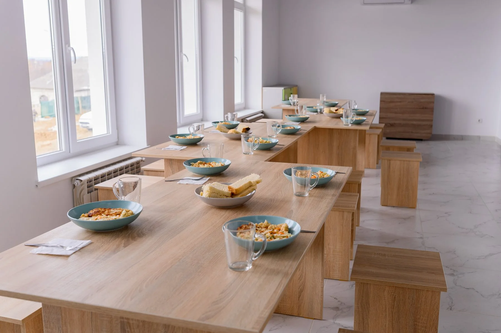
Centrul oferă un mediu ordonat, cald și protejat, unde recuperarea se desfășoară într-un ritm zilnic clar.
Imagine ilustrativă. Programul se desfășoară cu respectarea confidențialității participanților.
Centrul este creat ca o rezidență liniștită: aici persoana locuiește, se recuperează, comunică, lucrează cu sine și revine treptat la responsabilitate.
Momente reale din viața de zi cu zi a centrului: întâlniri, lucru în grup, spații comune, activitate și sprijin aproape.
Fotografiile sunt publicate cu respect pentru confidențialitatea și demnitatea persoanelor.
Programul unește locuirea, alimentația, ritmul zilnic, comunitatea terapeutică și sprijinul familiei.
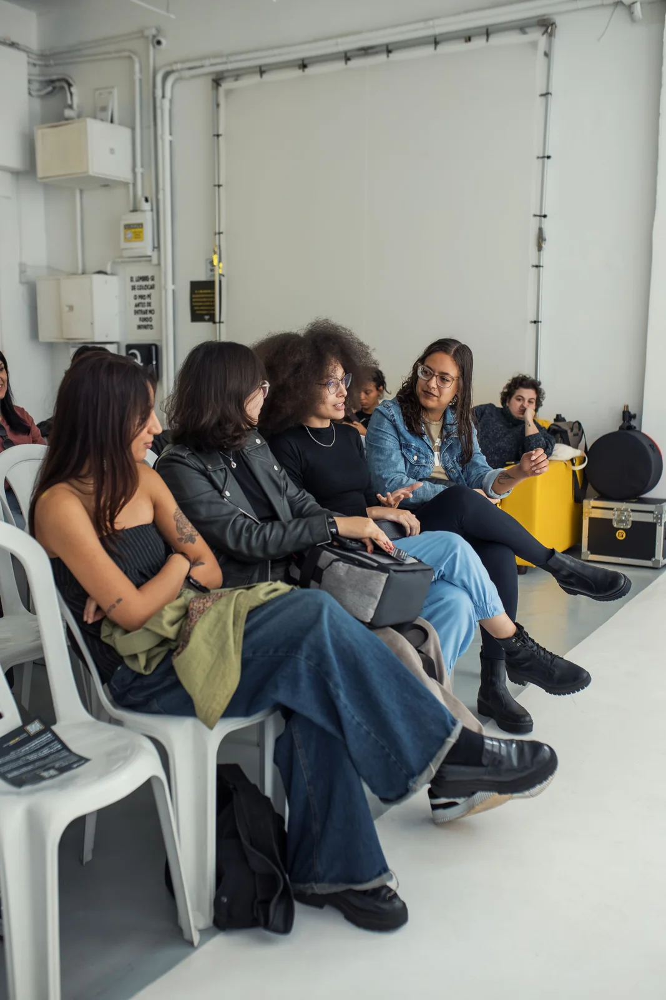
Camere simple, curate și liniștite pentru odihnă, somn stabil și ritm zilnic.
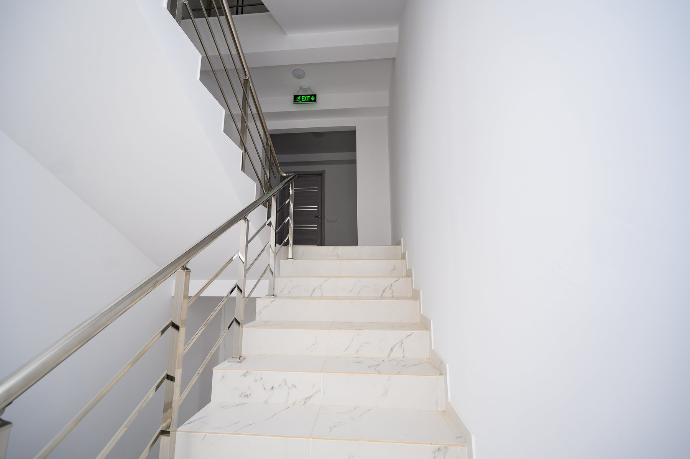
Un ritm zilnic clar ajută la disciplină, responsabilitate și stabilitate.
Întâlnirile de grup ajută persoana să se înțeleagă și să învețe comunicarea sănătoasă.
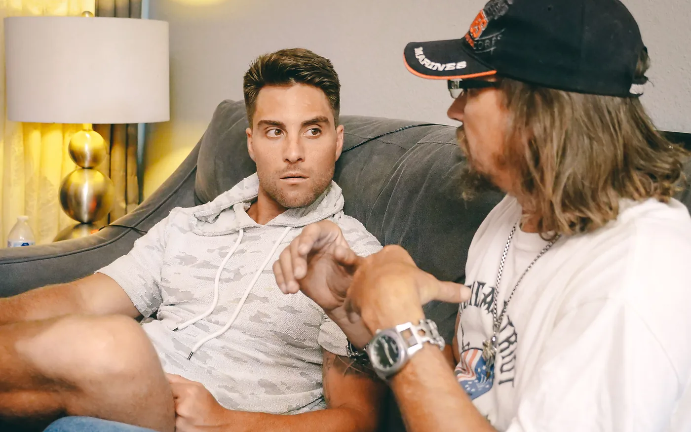
Pregătire pentru revenirea în familie, responsabilități, muncă și viață socială.
Recuperarea este mai ușoară când alături sunt oameni care înțeleg drumul, susțin ordinea și ajută la păstrarea direcției.
Imagine ilustrativă. Programul se desfășoară cu respectarea confidențialității participanților.
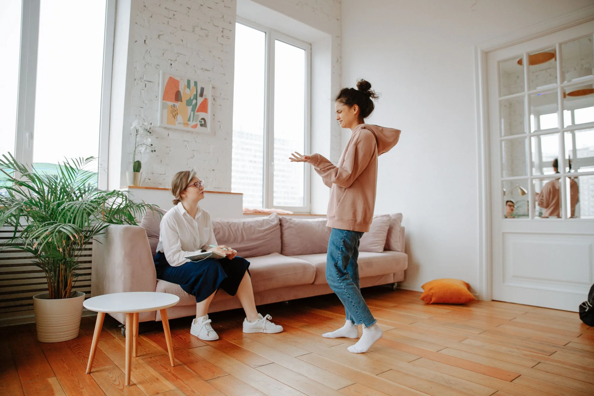
Poți vorbi liniștit despre situație, poți pune întrebări și poți primi o orientare clară despre condiții și începutul recuperării.
Imagine ilustrativă. Programul se desfășoară cu respectarea confidențialității participanților.
Mișcarea, munca, viața comună, plimbările și responsabilitățile simple ajută la refacerea ordinii interioare.
Imagine ilustrativă. Programul se desfășoară cu respectarea confidențialității participanților.
Programul exact poate varia, dar fiecare zi păstrează ordine, comunicare, responsabilitate și timp pentru odihnă.
Alegeți situația cea mai apropiată. Vom începe cu o conversație calmă și confidențială.
Vreau să mă opresc, dar singur nu reușesc.
Solicită consultațieNu știu cum să vorbesc și ce să fac mai departe.
Solicită consultațieAcasă sunt multe tentații, conflicte sau instabilitate.
Solicită consultațieEste nevoie de un nou început fără judecată.
Solicită consultațieVrem să înțelegem cum putem sprijini corect.
Solicită consultațieProgramul unește locuirea, alimentația, ritmul zilnic, comunitatea terapeutică și sprijinul familiei.
Camere simple, curate și liniștite pentru odihnă, somn stabil și ritm zilnic.
Masă regulată și mese comune ca parte a ritmului și comunității.
Un ritm zilnic clar ajută la disciplină, responsabilitate și stabilitate.
Întâlnirile de grup ajută persoana să se înțeleagă și să învețe comunicarea sănătoasă.
Discuțiile individuale ajută la clarificarea obiectivelor, dificultăților și pașilor concreți.
Spațiu de liniște, rugăciune și reflecție pentru cei deschiși dimensiunii spirituale.
Ajutăm familia să înțeleagă procesul de recuperare și să ofere sprijin sănătos.
Pregătire pentru revenirea în familie, responsabilități, muncă și viață socială.
Etapele programului sunt explicate clar și calm. Primul pas este o consultație confidențială pentru persoană și familie.
Centrul oferă un mediu ordonat, cald și protejat, unde recuperarea se desfășoară într-un ritm zilnic clar.
Camere simple și ordonate pentru odihnă și stabilitate.
Alimentație regulată și atmosferă de comunitate.
Ritm zilnic, grupuri, activități și responsabilități.
Săli pentru grupuri, discuții și lucru individual.
Posibilitate de rugăciune, reflecție și însoțire spirituală.
Distanță de tentații și susținere din partea comunității.
Centrul este creat ca o rezidență liniștită: aici persoana locuiește, se recuperează, comunică, lucrează cu sine și revine treptat la responsabilitate.
Activitățile simple ajută la disciplină, atenție, cooperare și revenirea la bucurii fără obiceiuri distructive.
O activitate liniștită pentru atenție, răbdare și comunicare.
Mișcare ușoară, reacție și bucuria unei activități împreună.
Jocul în echipă susține disciplina, cooperarea și mișcarea sănătoasă.
Mese comune care creează atmosferă de casă și comunicare.
Spațiu pentru plimbări, liniște și un ritm sănătos.
O activitate liniștită pentru răbdare, atenție și odihnă în natură.
De-a lungul anilor, centrul Optima Fide a însoțit oameni și familii în situații dificile, ajutându-i să parcurgă un drum de recuperare, responsabilitate și revenire la viață.
Oameni care au parcurs un drum de recuperare, cazare, acompaniere și revenire treptată la responsabilitate.
Consultații individuale, familiale și inițiale pe întreaga perioadă de activitate a centrului.
Experiența echipei, ritmul zilnic al centrului, sprijinul pentru familie și acompanierea participanților la program.
Aceste cifre reflectă experiența generală a centrului și nu reprezintă o promisiune a unui rezultat individual.
Certificatul confirmă acreditarea serviciului de reabilitare prin comunitate terapeutică pentru consumatori de substanțe psihoactive și pacienți ai terapiei de substituție.
Echipa combină experiența administrativă, consilierea, psihologia și sprijinul de la egal la egal.
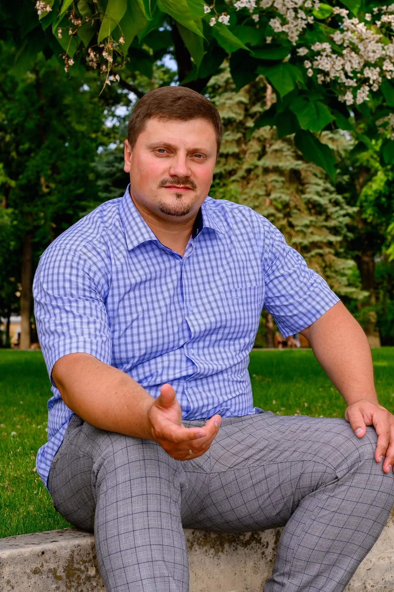
Președinte și membru al Consiliului Fundației
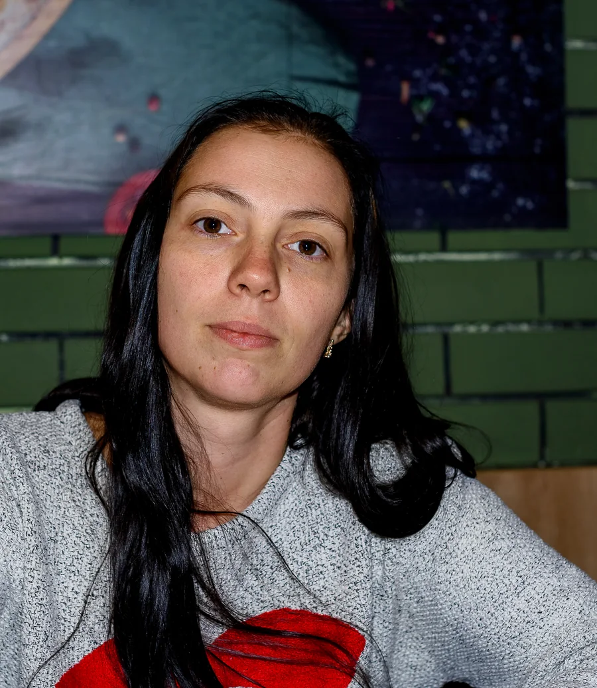
Psiholog / sprijin pentru participanți
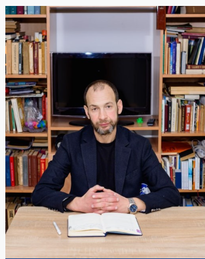
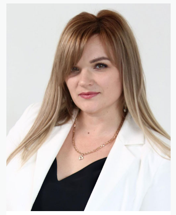
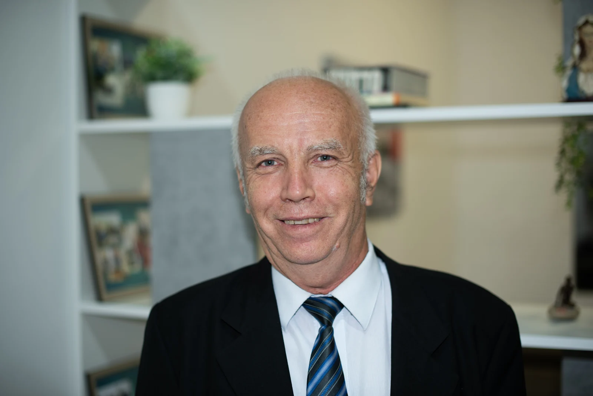
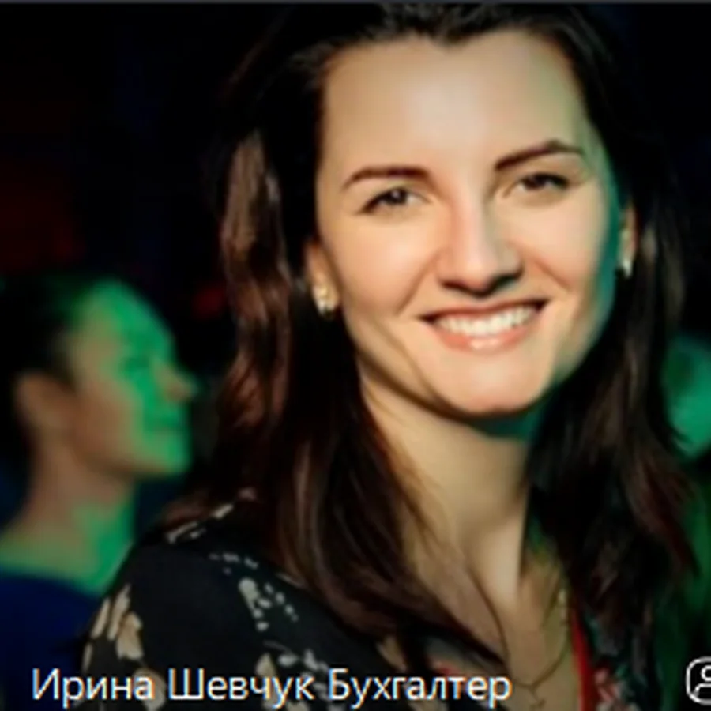
Programul exact poate varia, dar fiecare zi păstrează ordine, comunicare, responsabilitate și timp pentru odihnă.
Fiecare pas este discutat înainte, astfel încât persoana și familia să știe ce urmează.
Discutăm situația, nevoile, motivația și condițiile posibile.
Stabilim data, documentele, lucrurile necesare și sosirea în centru.
Cunoașterea centrului și a regulilor, adaptare calmă și primul plan de însoțire.
Lista completă poate fi precizată în timpul consultației.
Dependența afectează nu doar persoana, ci și familia. De aceea, Optima Fide oferă sprijin, orientare și însoțire pentru cei apropiați.
Începem cu un dialog calm, fără amenințări și acuzații.
Clarificăm condițiile, lucrurile necesare și primii pași împreună.
Ajutăm familia să păstreze limite sănătoase și o comunicare respectuoasă.
Revenirea este pregătită treptat, cu responsabilități și sprijin clar.
La cerere, pot fi discutate individual ieșiri liniștite spre mănăstiri, natură, Nistru și locuri culturale.
O ieșire calmă pentru conversație, cafea și o schimbare de atmosferă.
Plimbări calme printre alei, arbori și grădini amenajate.
Spațiu pentru plimbare, aer liber și o schimbare liniștită de atmosferă.
O ieșire culturală pentru curiozitate, dialog și cunoașterea Moldovei.
Patrimoniu, natură și tradiții într-un spațiu cultural deosebit.
Istoria orașului și o perspectivă panoramică asupra Chișinăului.
Traseele se discută individual, după starea participantului și regulile programului.
O ieșire activă în aer liber, organizată prin acord prealabil și cu însoțire.
Un loc liniștit pentru rugăciune, reflecție și reculegere.
Prin acord prealabilIeșirile se discută individual în timpul consultației, ținând cont de starea participantului, regulile programului și condițiile meteo.
Separăm clar programul de bază de serviciile suplimentare, pentru ca familia să poată lua o decizie informată.
Poate ajuta la relaxare și reducerea tensiunii. Disponibil cu programare prealabilă.
Sprijină îngrijirea personală, demnitatea și sentimentul de ordine.
La nevoie, consultația poate fi organizată printr-un specialist de profil.
Consultațiile pot fi organizate prin specialiști pentru evaluare și recomandări.
Se organizează prin instituții medicale și laboratoare de profil.
Transport, însoțire, programări la specialiști și alte nevoi practice.
Sprijinul voluntar ajută la menținerea unui spațiu în care oamenii primesc acompaniere, cazare, hrană, sprijin pentru familie și șansa de a începe din nou.
Fiecare donație ajută la susținerea unui spațiu sigur de recuperare pentru persoane și familii.
Suntem deschiși colaborării cu comunități bisericești, servicii sociale, fundații, specialiști și donatori.
O modalitate rapidă de a susține centrul online.
Susține prin PayPalPentru donații de la persoane fizice, organizații și parteneri.
Arată rechizitelePuteți sprijini centrul în numerar prin terminal, alegând fondul Optima Fide.
Pentru întrebări despre donații, ne puteți scrie pe Telegram.
Recuperarea începe adesea nu cu siguranță, ci cu o primă discuție sinceră, un mediu sigur și sprijin aproape. Numele au fost schimbate.
Numele au fost schimbate. Istoriile redau experiențe de recuperare și arată cât de importante sunt mediul sigur, ritmul zilnic și sprijinul apropiat.
Răspunsuri scurte la întrebările care apar înainte de primul apel.
Da. Prima conversație este confidențială și nu obligă la intrarea în program.
Durata se discută individual după consultație, în funcție de situație și nevoi.
Da, programul rezidențial include cazare, masă și ritm zilnic.
Da. Familia poate primi orientare despre cum să discute și ce pași sunt posibili.
Da. Sosirea și detaliile practice se coordonează înainte.
Documente, haine comode, igienă personală și lucrurile necesare. Lista se clarifică la consultație.
Ieșirile, serviciile personale, consultațiile externe, analizele, transportul și alte nevoi individuale se discută în timpul consultației.
La nevoie, ele se organizează separat prin specialiști și instituții de profil.
Vizitele se discută individual, în funcție de etapa programului și regulile centrului.
Sunați sau scrieți pe Telegram. Vom asculta situația și vom explica pașii următori.
Da. Formatul este creat pentru o cunoaștere liniștită a centrului. După weekend puteți pleca acasă, pune întrebări suplimentare sau discuta o posibilă continuare.
Da. Formatul este prevăzut pentru participant și o persoană apropiată. Un însoțitor suplimentar este posibil prin acord prealabil.
Da. Dacă participantul și familia doresc să ia în considerare o ședere mai lungă, variantele și condițiile sunt discutate individual după consultație.
Ne puteți scrie pe Telegram sau suna. Răspundem cu discreție și respect.
+37379002064Vă rugăm să ne contactați mai întâi. Vă vom sugera un moment potrivit, vă vom explica cum să ajungeți și vom răspunde calm la primele întrebări.
Stabilește o vizităFundația mulțumește organizațiilor și partenerilor bisericești care susțin activitatea centrului și dezvoltarea programului de reabilitare.
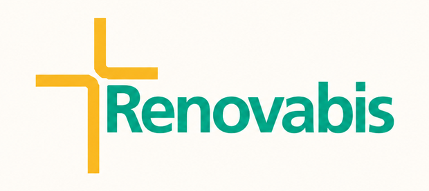
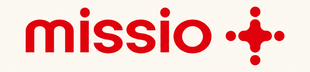
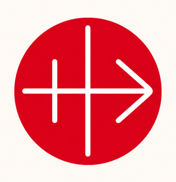
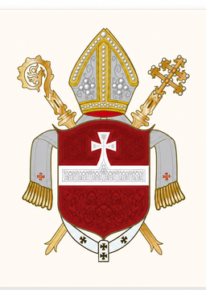
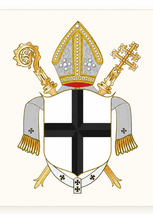
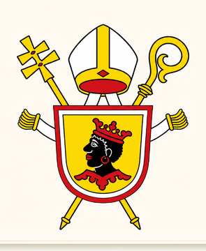
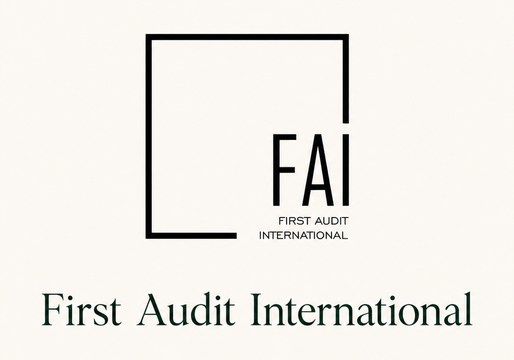
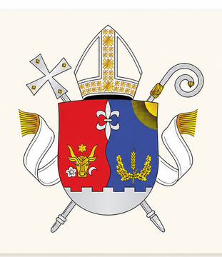